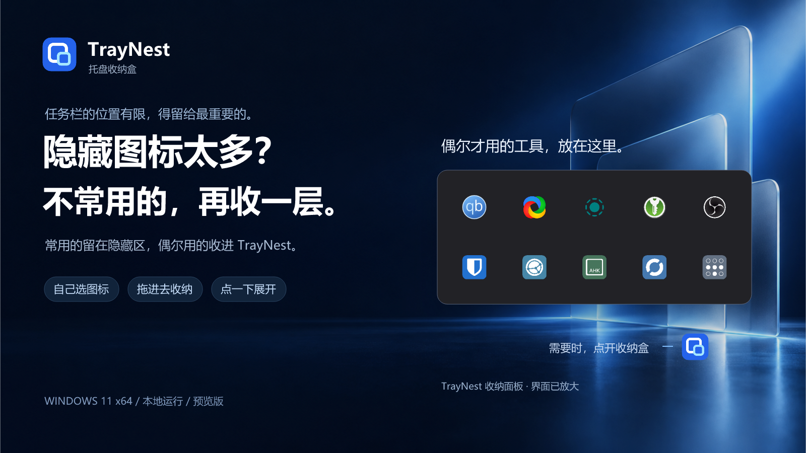
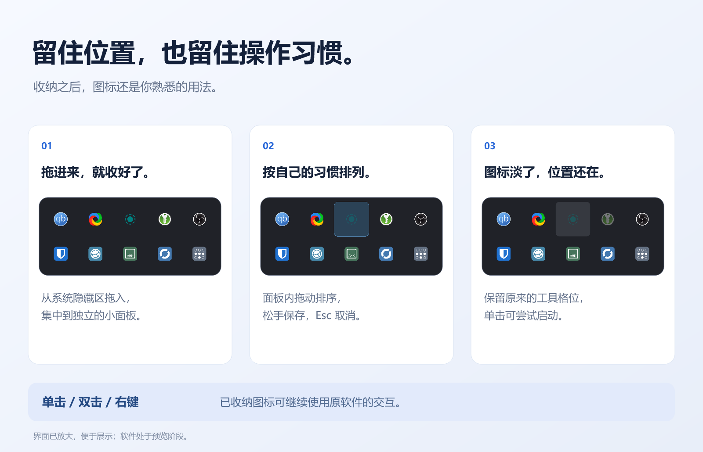
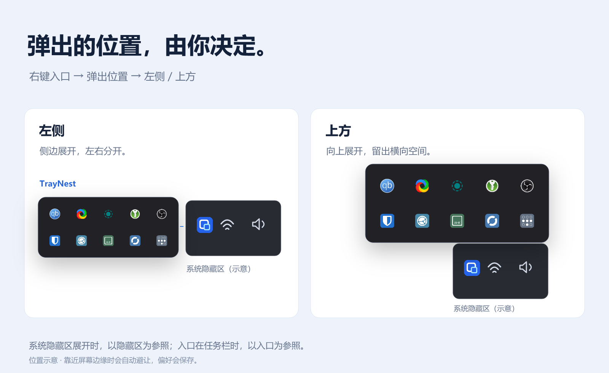

<!doctype html><meta charset="utf-8"><title>TrayNest README 宣传图</title><style>body{margin:0;padding:32px;background:#101620;color:#dae5f5;font:16px system-ui}main{max-width:1200px;margin:auto}img{display:block;width:100%;margin:24px 0 48px;border-radius:12px}a{color:#a5d8ff}</style><main><h1>TrayNest · README 宣传图</h1><p>背景、产品控件、品牌与文字均保留独立图层。输出为GitHub可直接显示的PNG。</p><h2>hero</h2><a href="layers/hero.svg">查看可编辑SVG</a><h2>hierarchy</h2><a href="layers/hierarchy.svg">查看可编辑SVG</a><h2>features</h2><a href="layers/features.svg">查看可编辑SVG</a><h2>placement</h2><a href="layers/placement.svg">查看可编辑SVG</a></main>